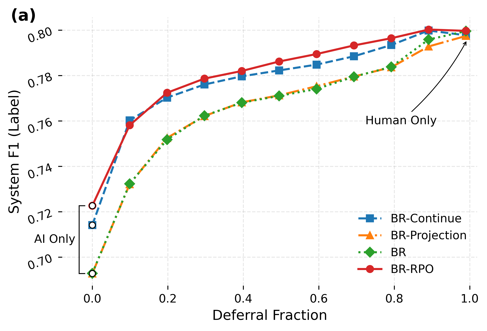
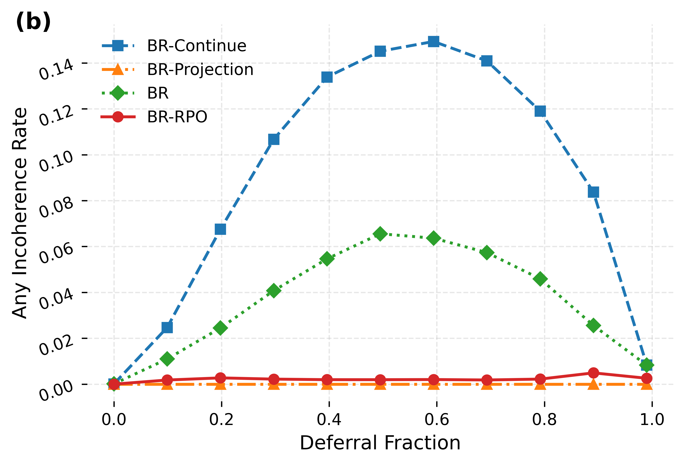
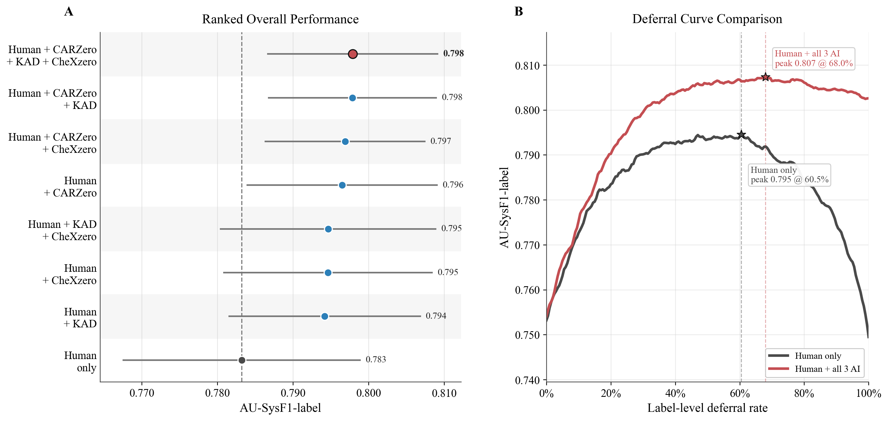

Learning to defer / medical imaging / human-AI handoff
Coherent hierarchical multi‑label learning to defer for medical imaging
Learning to defer in a taxonomy is not just a collection of independent label decisions. The handoff should also make clear which findings are predicted, which are ruled out, and which are left for the clinician.
What this page explains
- The setting
- Why multi-label medical taxonomies change the meaning of deferral.
- The failure modes
- Taxonomic, delegation, and deductive inconsistencies in a handoff.
- The decision rule
- Why the coherent Bayes action is a joint taxonomy decision.
- The algorithms
- Projection and TBP+RPO as two ways to enforce the handoff contract.
01
02
03
04
Challenge
Flat deferral is the wrong abstraction for a taxonomy.
Standard hierarchy-aware classification constrains binary labels. Hierarchical L2D must also constrain ternary actions: absent, present, and defer. Otherwise the system can send a clinical reader a delegation that contradicts itself.
Flat labels to taxonomy
Independent actions only become problematic once the clinical structure is visible.
The flat view treats each finding as a separate defer-or-predict decision. When the taxonomy edges appear, a deferred parent with a present child becomes a delegation violation.
Child present under absent parent
The model asserts a specific finding while ruling out the broader clinical category that must contain it.
Child decides a deferred parent
The model asks the expert to decide a parent, then autonomously asserts a child whose presence already commits the parent.
Deferred value already entailed
The model defers a node whose value follows from its own ancestor decisions, creating unnecessary and confusing reader work.
Bayes-optimal deferral
The optimal defer decision is no longer nodewise.
Flat L2D compares the model and expert separately at each label. In a taxonomy, those local winners can be mutually incompatible. The paper's Bayes action instead minimizes total risk over the coherent action set.
Coherent Bayes action
aSEB(x)
∈
arg min
a ∈ CSE
∑
v ∈ V
ρv(av ∣ x)
In words: choose the lowest-risk handoff that is allowed by the taxonomy.
- a is the whole action vector, not one label at a time.
- C_SE is the set of coherent Selective-Exclusion handoffs.
- ρv is the local risk of choosing absent, present, or defer at node v.
Flat Bayes
Minimize each node separately
Lung opacity
local winner: defer
present
.52
defer
.18
Consolidation
local winner: present
present
.14
defer
.34
Nodewise output
Lung opacity = defer, Consolidation = present
Coherent Bayes
Compare feasible joint handoffs
Lowest local combination, but not in C_SE.
A coherent handoff after enforcing the taxonomy constraint.
Also coherent, with a different total-risk tradeoff.
Methods
Two ways to impose the handoff contract.
We use exact coherent projection for trained BR-L2D models and TBP+RPO for learned structured inference.
Exact retrofit
decoder
BR + Projection
Train a standard binary-relevance L2D model, then decode the closest coherent action vector by dynamic programming over the taxonomy.
- Inference-only repair for existing local L2D models
- Exact MAP over the Selective-Exclusion coherent action set
- Useful when every displayed handoff must satisfy the contract
Learned structured policy
recursive
TBP + RPO
Taxonomic Belief Propagation builds structural zeros into parent-child action transitions. Recursive Policy Optimisation fine-tunes through the same hierarchy recursion used at inference.
- TBP joint model has coherent support under SE
- Ancestor decisions learn downstream costs during Stage II training
- Marginal decoder for repeated inference
Inside TBP + RPO
TBP encodes the SE contract in the transition kernel.
TBP maps local absent, present, and defer primitives through parent-conditioned transitions. Entries corresponding to forbidden parent-child actions are zero. RPO fine-tunes through the TBP recursion, so descendant losses can update ancestor primitives.
01
Local primitives
Every node proposes a ternary action distribution.
02
Taxonomic gate
Parent actions mask and renormalize child actions.
03
Recursive training
Descendant losses update the ancestor choices that constrain them.
Local primitive eta_v
absent
.31
present
.46
defer
.23
SE transition kernel
child absent
child present
child defer
parent absent
1
0
0
parent present
eta_0
eta_1
eta_d
parent defer
alpha
0
1-alpha
A deferred parent cannot pass probability mass to a positive child assertion.
Composed handoff
Lung opacity
defer
Edema
allowed absent
Consolidation
present zeroed
Consolidation
defer remains
TBP assigns zero support to incoherent action vectors by construction.
Results
What changes when coherence is enforced?
The experiments compare independent nodewise L2D with two coherent alternatives. The main quantity to track is whether the final handoff remains interpretable under the taxonomy.
Budget sweep
Benchmark outcomes
Higher is better for BalAcc, F1-I, and F1-L. Lower is better for incoherence.
| Dataset | Method | BalAcc | F1-I | F1-L | Any incoh. |
|---|---|---|---|---|---|
| VinDr-CXR | BR-L2D | .852 | .512 | .749 | .107 |
| BR (cont.) | .847 | .514 | .763 | .138 | |
| BR+Projection | .853 | .513 | .749 | =0 | |
| BR+RPO | .853 | .515 | .768 | .004 | |
| CheXpert | BR-L2D | .811 | .641 | .734 | .050 |
| BR (cont.) | .823 | .648 | .749 | .050 | |
| BR+Projection | .812 | .642 | .735 | =0 | |
| BR+RPO | .841 | .652 | .764 | ~0 | |
| PadChest | BR-L2D | .679 | .230 | .421 | .124 |
| BR (cont.) | .671 | .218 | .410 | .131 | |
| BR+Projection | .692 | .240 | .430 | =0 | |
| BR+RPO | .721 | .272 | .437 | ~0 | |
| ADPv2 | BR-L2D | .896 | .863 | .878 | .068 |
| BR (cont.) | .900 | .868 | .882 | .062 | |
| BR+Projection | .895 | .861 | .876 | =0 | |
| BR+RPO | .900 | .868 | .882 | .009 |



Summary
What to remember.
The issue is semantic.
A handoff can be label-satisfiable and still clinically confusing because the model has delegated a decision it already resolved elsewhere in the taxonomy.
Coherence changes the Bayes rule.
Coherent deferral is a structured optimisation over the taxonomy; independent nodewise Bayes L2D can still produce delegation violations and deductive defects.
The method choice is explicit.
Projection is deterministic and exactly coherent at inference. TBP+RPO is the learned marginal policy evaluated in the main experiments.
Citation
Anonymous citation
Citation details are anonymized for double-blind review.
@misc{anonymous2026coherent,
title = {Coherent Hierarchical Multi-Label Learning to Defer for Medical Imaging},
author = {Anonymous Authors},
year = {2026},
note = {Anonymous submission}
}